백작가의 망나니가 되었다 같은 웹툰 추천
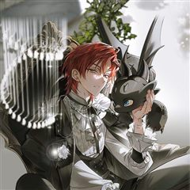
백작가의 망나니가 되었다 · 별나래 / PAN4 / 유려한
백작가의 망나니가 되었다 재밌게 봤다면 이 웹툰들도 좋아할 거예요. 같은 장르이면서 미스터리, 빙의 같은 요소가 겹치는 작품을, 겹치는 요소가 많은 순서로 20개 골랐어요.
2026-10-08 기준 · 네이버웹툰·카카오웹툰·레진코믹스 · 성인 작품 제외
내 취향으로 직접 골라 추천받기 →-
1
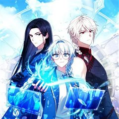
카카오웹툰상태창에서 시한부가 빗발친다
3,000편이 넘는 희대의 명작 <여명의 참회>에 빙의했다. 그것도 단두대형에 처해진 공작가의 후계자이자 나의 차애 캐릭터인 ‘미첼 네프티스’로. 하지만 상태창을 열어보니 사망까지 D-3. 이대로는 죽을 수 없다는 생각에 어떻게든 살아남아보니 전개를…
미스터리빙의판타지드라마카카오웹툰에서 보기 → -
2카카오웹툰
마법명가 막내아들
내가 쓴 허술한 개연성과 마구잡이 설정의 소설 속에 들어와 버렸다. 하필이면 17살에 가문 내에서 숙청당하는 비운의 망나니 조연, '라센 메이튼'이 되어서. 티타늄 수저에 빙의. 그리고, 적당히 중간을 유지하면서 조용하게 지낸다면, 유유자적 돈낭비…
미스터리빙의판타지드라마카카오웹툰에서 보기 → -
3카카오웹툰
아포칼립스엔 고인물이 필요해요
"나는 도파민중독자다." 도파민에 절여진 내 인생에 도파민이 최대로 터지는 이벤트가 발생한다. 우연찮게 들른 편의점에서 점원한테 헤드샷을 당하고 지옥 같은 난이도를 가진 <아포칼립스:안전구역> 게임 속으로 다른 유저들과 함께 빙의가 된 것인데…. 그…
미스터리빙의판타지드라마카카오웹툰에서 보기 → -
4카카오웹툰
이거 전략게임 아니었나요
클리어율 0% 악명 높은 전략게임 속 히든 캐릭터로 빙의했다. 제국에 평화를 가져와야만 이 게임을 탈출할 수 있는데… “그럼 전 이제부터 사제님만 믿겠습니다.” “그 계획, 포기하시는 게 좋을 겁니다.” “사제님, 설마 절 이용하신 겁니까?” “이상…
미스터리빙의판타지드라마카카오웹툰에서 보기 → -
5카카오웹툰
신인인데 천만배우
계부 밑에서 어렵게 유년시절을 보낸 무영. 그에겐 삶이 지옥과도 같았다. 살아 있는 지옥에서 살 길을 알려준, 신비스러운 한 목소리. “네 인생 대신 다른 누군가의 인생을 살아." 그렇게 시작한 연기였는데…… 생존 본능과도 같은 것이었을까. 잘해도,…
미스터리판타지드라마카카오웹툰에서 보기 → -
6
 카카오웹툰
카카오웹툰록산
격동의 19세기 말, 귀족 셸 가문 남작 부부가 살해되고, 부모의 죽음으로 큰 충격과 실의에 빠진 아들 '막시밀리안'. 장례식을 치르고 돌아온 날 어머니가 고용한 신비롭지만 수상한 가정교사 '록산'을 만나는데... 마법을 사용하여 자신을 위험에서 구…
미스터리판타지드라마카카오웹툰에서 보기 → -
7카카오웹툰
미친 세계의 엑스트라
“이 거지 같은 세계에 버려지다니!” 무려 800화 이상 연재되며 독자들에게 욕을 푸짐히도 들어먹은 ‘칠색 세계의 연대기’. 온갖 막장 요소와 끝도 없이 강해지는 몬스터, 툭하면 주인공을 죽이려 하는 히로인들이 판치는 미친 세계. ‘근데 이딴 세계에…
미스터리빙의판타지카카오웹툰에서 보기 → -
8카카오웹툰
닥터 플레이어
왕의 사생아, 레이몬드. 사람들의 멸시로부터 도망쳐 치료사가 되지만, 결과는 F급 낙제 치료사라는 낙인뿐. 그러던 어느 날, 그에게 기적이 찾아온다. [플레이어로 각성하였습니다!] [직업 : 외과의사(SSS급)] 이 세계에 존재하지 않는 의학 지식을…
미스터리판타지드라마카카오웹툰에서 보기 → -
9
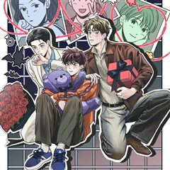
카카오웹툰뱀파이어의 아들들
인간들과 함께 살아가는 뱀파이어 가족. 흡혈 욕망에서 자유로워지는 방법은 바로 진정한 사랑♡♡♡ 아들1. 차지성 우등생-명문대-대기업 코스를 걸어온 엄친아. 오래 사귄 여친과 사내 비밀연애 중. 아들2. 차유성 잘나가는 쇼핑몰 사장 겸 모델. 3개월…
미스터리판타지드라마카카오웹툰에서 보기 → -
10
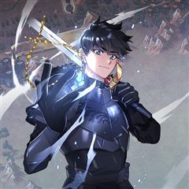
카카오웹툰운빨
내 삶에서 그렇게 터지지 않던 운빨이 게임을 접기 직전, 단 한 방에 터졌다! 세계 최초 가상현실 게임 <서킷>에서 인생 역전하려던 이기호, 4억 명의 플레이어 중 그 누구도 손에 넣지 못한 레어 아이템이 그의 손에 들어왔다! “이런 게 진짜 인생역…
미스터리판타지드라마카카오웹툰에서 보기 → -
11
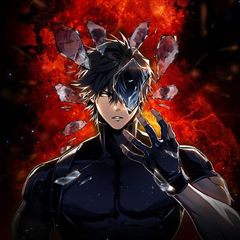
카카오웹툰환생자의 스트리밍
“십 년간 오늘만을 준비했어. 그러니까 네가 이해해라.” 최강의 플레이어라 불리던 이수혁. 그러나 믿었던 친구의 배신으로 길드원들을 지키다 처참한 죽음을 맞는다. ···눈을 뜬 순간, 그는 무려 20년 후의 세상에 돌아와 있었다. 세상은 그의 죽음을…
미스터리판타지드라마카카오웹툰에서 보기 → -
12
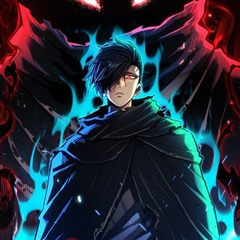
카카오웹툰환생의 정석
최강의 무가 사미온에서 외팔이 방계로 태어난 데이븐. 반쪽짜리 무인이라며 갖은 조롱과 멸시를 딛고 사미온의 직계 천재마저 넘어섰으나, 결국 가문과 부모에게 버림받아 가장 초라한 최후를 맞이하게 되는 줄 알았는데... 500년 뒤 새로운 몸에서 눈을…
빙의판타지드라마카카오웹툰에서 보기 → -
13카카오웹툰
나 혼자 부활한다
『고유능력: 부활』 “뭐지? 이 개사기 개꿀 먼치킨 스킬은?” 하지만 강현은 몰랐다. 죽어도, 죽고 싶어도, 죽지 않는다는 게 어떤 의미인지를… 불사의 몸으로 지구에서 가장 악명 높은 헌터가 된 남자! 인류의 존망, 아니 존망한 인류를 위해, 오늘도…
미스터리판타지드라마카카오웹툰에서 보기 → -
14
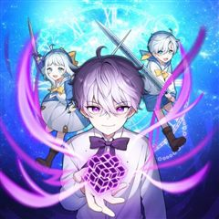
카카오웹툰시한부 드래곤의 생존법
시한부 인생 끝에 웹툰 속 드래곤으로 빙의했는데 또 다시 시한부 인생, 아니 용생이 되었다?! 갑부에다 수천년의 수명을 가진 세계관 최강의 생물 드래곤의 헤츨링으로 태어난 로이스. 하지만 시시각각 닥쳐오는 개연성 없는 위기에 언제 죽을 지 모른다니…
빙의판타지드라마카카오웹툰에서 보기 → -
15
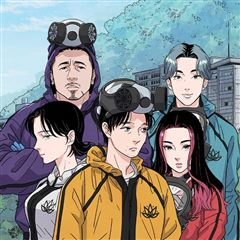
카카오웹툰DELETE
“당신은, 당신의 인생을 삭제하시겠습니까?” 삶의 끝자락에서 제2의 삶을 살 기회가 주어졌다. 금방이라도 무너질 것만 같은 건물이지만 첨단 시설을 갖추고 있는 ‘황금 찜질방’. 인생을 삭제한 다섯 명의 인물은 이곳에서 새로운 삶을 꿈꾼다. 그런데 시…
미스터리판타지드라마카카오웹툰에서 보기 → -
16카카오웹툰
히어로가 집착하는 악당이 되었다
히어로 만화 속에 빙의한 주인공 다인. 피폐물 만화 속 주인공이자 최애캐인 스타더스를 행복하게 하기 위해 스스로 그녀의 성장을 위한 빌런 에고스틱이 되기로 다짐한다. 다인은 의도적으로 테러를 일으키며 스타더스의 능력을 성장시키고 원작 속 피폐한 이벤…
빙의판타지드라마카카오웹툰에서 보기 → -
17
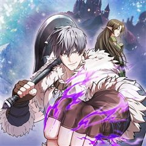
카카오웹툰판타지 세계 속 바바리안으로 살아가기
매일 밤 세상의 모든 신에게 기도했다. 부디, 잠에서 깨어난 다음 날 자신이 환상의 한가운데 있기를. 그리고 어느 날 바라고 바라던 기도가 이루어졌다. 단지 그가 바라는 것과는 전혀 다른 형태로. 자고 일어나니 하얗디하얀 세계 백색의 설원 속 '바바…
빙의판타지드라마카카오웹툰에서 보기 → -
18
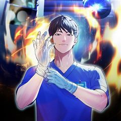
카카오웹툰외과 의사가 된 화타
“허망하기가 그지없다.” 신의神醫라 불릴 정도의 의술을 지닌 화부는 조조의 저주 아닌 저주에 옥에서 숨을 거두는데... ‘아직 죽지 않은 건가?’ 지독한 통증에 눈을 뜨니 보이는 것은... 처음 보는 낯선 물건과 글자들! “이, 이게 어떻게 된 일이…
빙의판타지드라마카카오웹툰에서 보기 → -
19
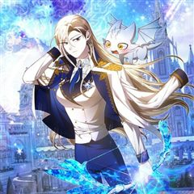
카카오웹툰여기 게임 속 아닌가요?
공성전 다 이겼는데 눈 떠보니 500년 뒤라는 걸 알게 된 길드마스터의 기분은? “아, 엿 같네…….” 길드원은 다 사라졌고 길드도 터져 있다. 게다가 이 세계도 어딘가 좀 이상해. ……안 되겠다. 일단 길드부터 살리고 보자. 랭킹 1위 <새벽> 길…
미스터리판타지드라마카카오웹툰에서 보기 → -
20카카오웹툰
월요일이 사라졌다
모든 직장인이 그렇듯, 월요일을 무지하게 싫어하는 진 한. 일요일 밤 자고 난 뒤 출근했는데, 월요일이 아닌 화요일이었다 통째로 사라진 월요일의 기억. 그런데 제대로 사고를 쳤다. 직장내 최고 퀸카 여사원에게 공개적으로 고백을 해 버린 것! 그리고…
미스터리판타지드라마카카오웹툰에서 보기 →